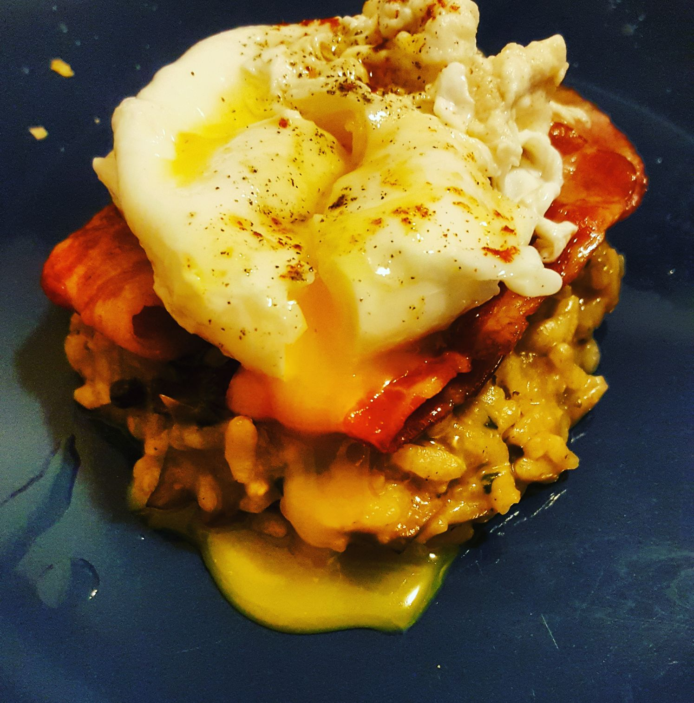
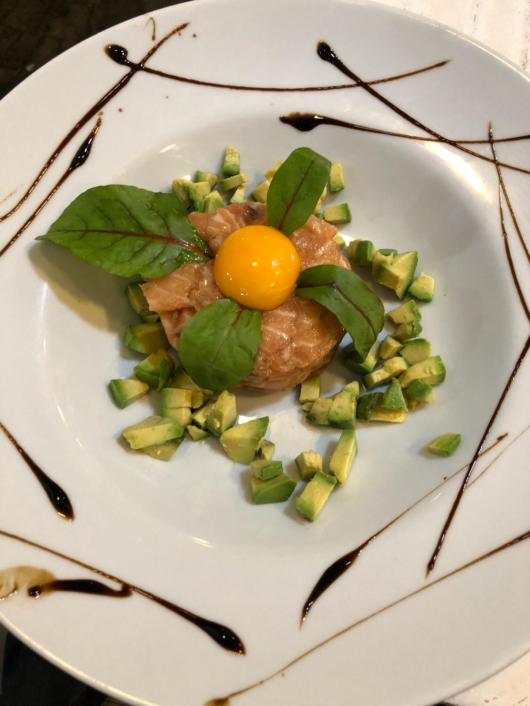
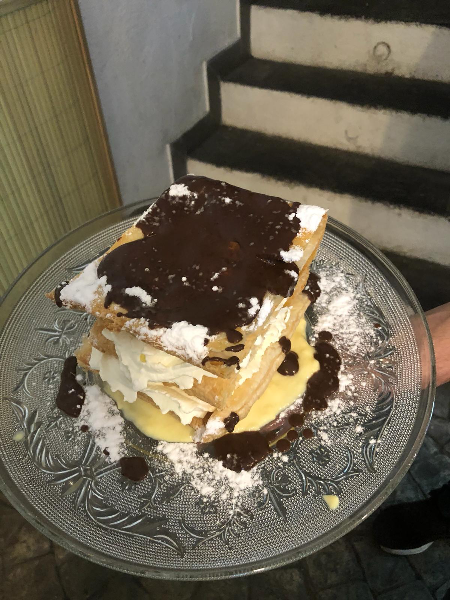
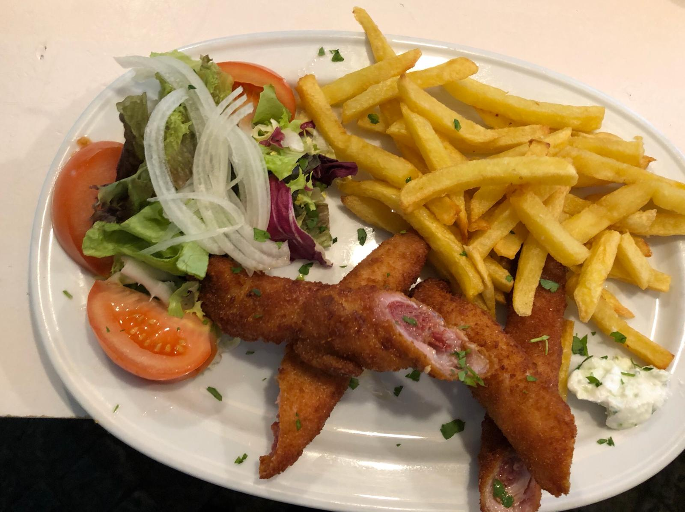

About us
Restaurant is a place for simplicity. Good food, good beer, and good service. Simple is the name of the game, and we’re good at finding it in all the right places, even in your dining experience. We’re a small group from Denver, Colorado who make simple food possible. Come join us and see what simplicity tastes like.



